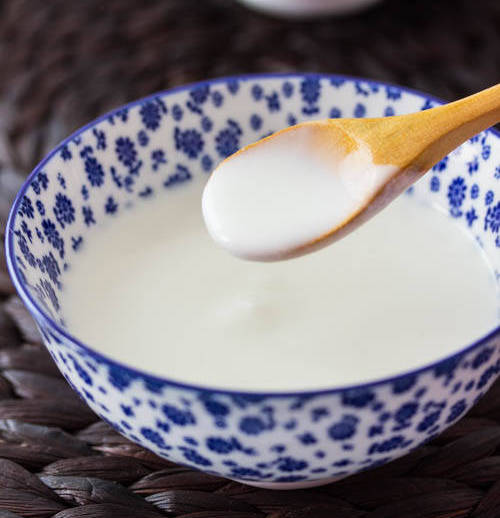

#34 - ALMOND TEA WITH EGG WHITE - 蛋白杏仁茶
A very popular Chinese dessert soup make from scratch with all natural ingredients. This is better than the store bought, premade version. And it is really not difficult to make.

INGREDIENTS:
- 220 g Chinese almond (see note)
- 20 g white rice
- 1.6 litre water
- 100g rock sugar
- Pinch salt
- 3 egg white
Directions:
- Rinse almond and rice in water.
- Put the almon and rice in a large bowl and cover with water 1 inch deep.
- Let it soak for 2 hours.
- Drain the almond and the rice with a sieve.
- Put half of the almond rice and ¼ water into a blender. Blend to liquify.
- Put the mixture through a fine sieve, or double cheese cloth. Collect the liquid in a pot.
- Return the residue from the sieve back into the blender and add another ¼ water.
- Blend again, then put it through the fine sieve or double cheese cloth.
- Collect the liquid in the pot.
- Repeat step 5-9 one more time. Collecting all the liquid in the pot.
- Put the pot on medium heat. Add the rock sugar and a pinch of salt.
- Cook until boil and all the rock sugar dissolved.
- Just before serving. Beat the egg white.
- Bring the almond tea to boil again.
- While stirring, gently and slowly pour in the egg white on top of the almond tea.
- Bring to boil and serve hot.
(Serves 1 person)
Note:
- There are two kinds of Chinese almond: the bigger size South Almond and a smaller size North almond. For this recipe the ratio of the two should be 10:1 (200g South almond and 20g North almond).